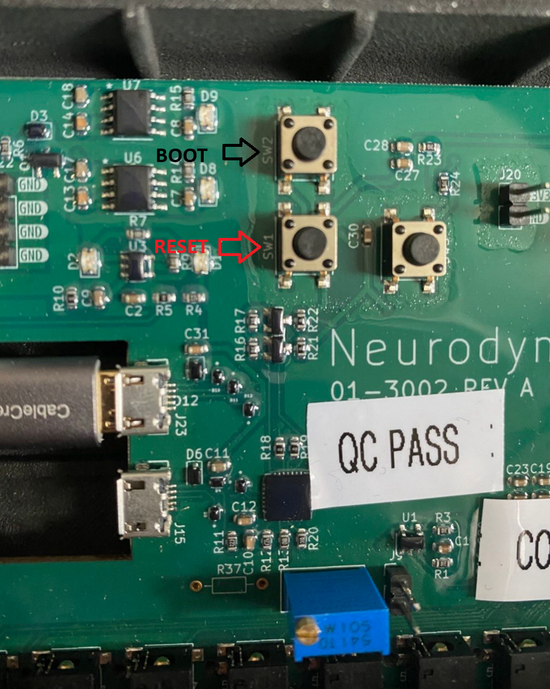
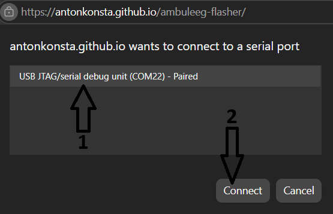

Flash the AmbulEEG firmware straight from this page — no software to install. Just follow steps 1–5 in order. Use Google Chrome or Microsoft Edge on a computer.
The board will not flash unless it's in flashing (download) mode. If you skip this, Step 3 just spins on “Connecting…” forever. With the board plugged in, press the buttons in this exact order:
The board is now in flashing mode. Go straight to Step 3.

Right after doing Step 2, click the button below:
A pop-up appears asking which device to connect to:
USB JTAG/serial debug unit (COM…)
or Silicon Labs CP210x USB to UART Bridge (COM…) (the COM number varies).
Live progress shows below. It's done when you see
Wrote … at 0x10000, then Leaving… and Hard resetting….
Anything wrong shows as red lines.
Don't unplug the board until it's done.
Stuck on “Connecting…”? The board isn't in flashing mode. Redo Step 2 (BOOT + RESET), then click Install again. Also make sure no other program (a serial monitor or IDE) has the port open.
No port appears in the pop-up? Install the USB driver. This board uses a CP2102N USB-to-UART bridge — the Silicon Labs CP210x VCP driver is the only driver you should ever need. Install it, replug the board, reload this page, and retry. (Windows 10/11 often install it automatically; macOS usually needs no driver.)
Plug in a board that already has firmware (it does not need to be in flashing mode),
then click below. The page asks the board what version it's running and tells you whether
it's current. Use Chrome/Edge, and make sure no other program (e.g. the Python viewer) has
the port open. Pick the same port the viewer uses —
USB JTAG/serial debug unit (COM…).
Firmware: ESP32-S3 · AmbulEEG main